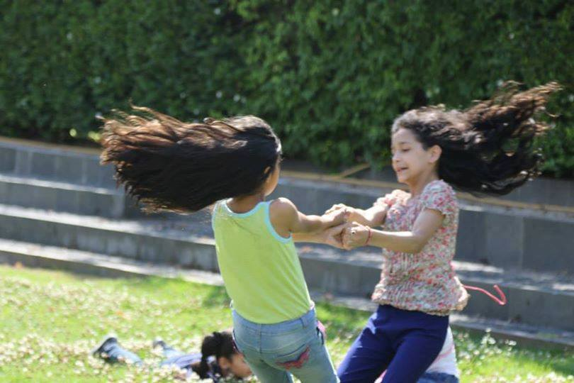
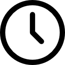
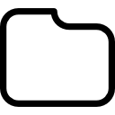
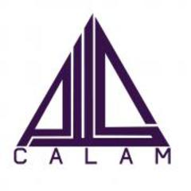
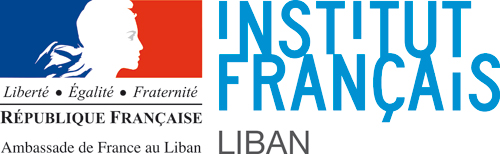

Nos actions
Création de centres d’éducation informelle de qualité à destination d’enfants syriens réfugiés
Plaidoyer auprès des autorités libanaises locales et gouvernementales pour l’intégration des enfants syriens au sein du système scolaire libanais, après remise à niveau par Yalla !
Organisation d’activités sportives et artistiques à destination d’enfants libanais et syriens dans le cadre du dialogue intercommunautaire porté par Yalla!
Nous aider ?
Projet en cours: Atelier théâtre
54% de notre objectif
L'actualité

Fest-noz solidaire le 29 octobre à Poullaouen

27 septembre 2017

non classée
Fest-noz solidaire le 29 octobre à Poullaouen
27 septembre 2017
non classée
Nos partenaire

